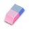
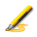
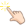
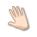
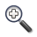
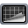
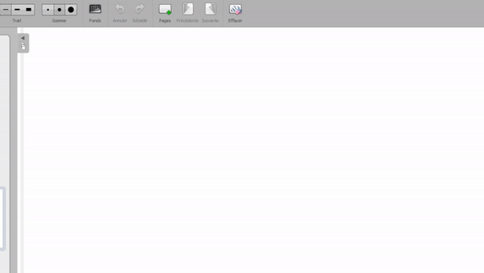

Paleta olovki
Paleta olovki vam daje pristup osnovnim alatima kada radite na bijeloj ploči.

Tamo ćete pronaći olovku , guma

i highlighter
. OpenBoard također pruža značajke koje tradicionalna pametna ploča ne može:-
 Selektor : odabir i interakcija s objektima.
Selektor : odabir i interakcija s objektima.
-

Čarobni prst : pomicanje/interakcija bez prethodnog odabira. -

Ruka : pomicanje stranice (vrlo korisno u kombinaciji sa zumiranjem). -

Zumiraj / Smanji : Kliknite gdje želite primijeniti efekt nakon što ga odaberete. - Laserski pokazivač : pokažite na elemente bez interakcije s njima.
- Linija : lako crtajte ravne linije.
- Tekst : umetnite tekstualni okvir za tipkanje na tipkovnici.
Stolna traka
Traka tablice omogućuje vam promjenu boja i/ili veličina između ostalog olovka i highlighter.

Također možete promijeniti pozadina stola klikom na

.
Dostupne su i druge funkcije: poništiti/ponoviti, stvarati stranice, kretati se između stranica, čistiti tablicu itd.